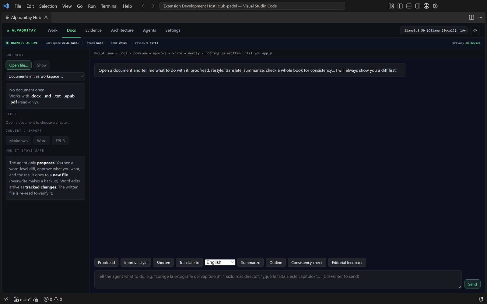

Chapter 06
Docs: documents with an agent
The Docs tab is for everything that is not code: manuscripts, reports, articles, documentation and books. You talk to the agent in English or Spanish, as you would to an editor:
"proofread chapter 3" · "make it more direct, keep my voice" · "translate the book to Spanish" · "check consistency across chapters" · "what is this chapter missing?"
Formats
| Format | Read | Write | Notes |
|---|---|---|---|
.docx (Word) |
✅ | ✅ | Edits are written as Word tracked changes (Review → Accept/Reject). Untouched paragraphs stay byte-identical. |
.md / .txt |
✅ | ✅ | Lossless outside the edited blocks; code blocks, tables and front matter are protected. |
.epub |
✅ | ✅ | Chapters follow the book's spine; italics and bold survive a round trip. |
.pdf |
✅ | ➡️ .md |
Read-only, best effort (text-based PDFs). A scanned PDF needs OCR first. |
From the same tab you can convert any document to Markdown, Word or EPUB: a manuscript in Markdown becomes a publishable EPUB in one click.
Step by step


- Open a document with Open file… or pick it from Documents in this workspace….
- Choose an action or type your own instruction:
- Edit: Proofread (spelling and grammar), Improve style, Shorten, Translate to (English, Spanish, French, German, Italian or Portuguese).
- Analyse: Summarize, Outline, Consistency check (names, dates, places and terminology across chapters) and Editorial feedback.
- Review the proposal. Every changed paragraph shows a word-level diff. Large rewrites, changed numbers and big length changes are flagged review and are not pre-selected.
- Select with Select all, Only safe or None, or box by box.
- Click Apply selected. By default a new file is written (
name.edited.docx,name.edited.md…). If you choose to overwrite, a backup is saved first in.alpaquitay/backups/. - Verification. The written file is read back to check that it opens and contains every accepted edit.
Analyses (summary, outline, consistency, feedback) do not change the document: save them with Save report as .md.

The same guarantees as for code
- The agent only proposes; you decide what is applied.
- Protected blocks it never touches: links, footnotes, fields, images, tables and code.
- Whole books: if an operation needs more than 20 model calls it asks you first (Continue), and it never makes more than 60.
- Privacy: with a cloud provider the text goes through the privacy boundary (personal data and secrets hidden); with a local model the manuscript never leaves your machine.
- No external dependencies: the ZIP, DOCX, EPUB and PDF readers and writers are built in, so the extension stays small and auditable.
Limits, stated plainly
- In a Word paragraph the agent rewrites, the formatting inside that paragraph (a bold word, for example) is replaced by the formatting of its first run. Tracked changes show exactly what changed.
- Paragraphs with hyperlinks, fields or notes are skipped rather than risk damaging them.
- Quality depends on the model. In our tests a 3B local model (
llama3.2:3b) wrote a useful editorial report, but answered "No changes needed" when asked to fix a Spanish text with missing accents. To proofread, restyle or translate, use a 7B model or larger, or a cloud one.
Suggest an improvement to this page
Manual for Alpaquitay AI 3.9.1 · MIT